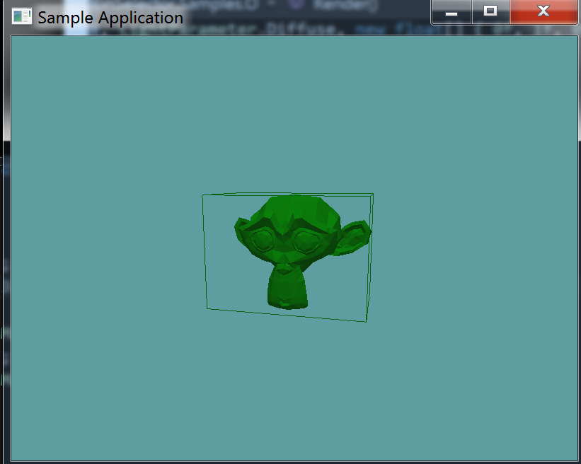

Bounding Volume Hierarchy
We're going to develop a BVH around our model class. The actual BVH will be a part of the OBJLoader class, but it's methods will be exposed trough the OBJ class as well.
I guess it's worth noting, every time i've built one of these BVH containers it came out different than the last one. This is why tree construction is a common interview question.
Because a bounding volume hierarchy is a tree, it is made up of nodes. The root of the tree will just be a regular node. So, before anything else, let's develop a class for the bvh node
BVHNode
For now we're going to divide the BVH tree at most 3 times, this is going to be a protected static variable.
A BVHNode is either a leaf node or not. If it is a leaf node, it will contain triangles and have no children. If it is not a leaf node, it will have children but no triangles. A node can have triangles or children, never both. We will expose this in a getter.
Finally, each BVH node is a box, an AABB box. As such, each node will need to have an AABB member. Also, when a new node is made, we assume it is going to be a leaf node.
public class BVHNode {
protected static int maxDepth = 3;
public List<BVHNode> Children = null;
public List<Triangle> Triangles = null;
public AABB AABB = null;
public BVHNode(AABB aabb) {
// Store AABB by value, not reference
AABB = new AABB(aabb.Min, aabb.Max);
// Assume this is leaf node by default
Triangles = new List<Triangle>();
Children = null;
}
public bool IsLeaf {
get {
return Children == null && Triangles != null;
}
}
}
Let's add a BVHNode object to the OBJLoader class. With it, we're going to add a recursive "RenderBVH" function, that will render a BVH and all of it's children!
protected BVHNode bvhRoot = null;
public BVHNode BvhRoot {
get {
return bvhRoot;
}
}
// Non-Recursive public API
public void RenderBVH() {
RenderBVH(bvhRoot);
}
// Recursive private API
private void RenderBVH(BVHNode node) {
node.AABB.Render();
if (node.Children != null) {
foreach (BVHNode child in node.Children) {
RenderBVH(child);
}
}
}
Even tough we've written functions to use the bvhRoot, we have not made the root yet. We need to create the bvh root in the constructor. This needs to happen after we know the bounding box of the object.
Remember, every node is considered a leaf node when constructed, the root node is no different. Because it's a leaf node, we're going to add all the triangles it contains to it. That just happens to be every triangle of the model.
There are two new lines of code in this excerpt from the OBJLoader constructor.
collisionMesh = new Triangle[vertexData.Count / 9];
int meshCounter = 0;
/*NEW*/bvhRoot = new BVHNode(containerAABB);
for (int i = 0; i < vertexData.Count; i += 9) {
collisionMesh[meshCounter++] = new Triangle(
new Point(vertexData[i + 0], vertexData[i + 1], vertexData[i + 2]),
new Point(vertexData[i + 3], vertexData[i + 4], vertexData[i + 5]),
new Point(vertexData[i + 6], vertexData[i + 7], vertexData[i + 8])
);
/*NEW*/bvhRoot.Triangles.Add(collisionMesh[meshCounter - 1]);
}
And finally, let's add a way to render this trough the OBJ interface, to the OBJ class, add a "RenderBVH" function:
public void RenderBVH() {
GL.PushMatrix();
GL.MultMatrix(WorldMatrix.OpenGL);
model.RenderBVH();
GL.PopMatrix();
}
Test it!
Let's test our work so far! To test, we're going to change the existing OBJSample class. Even tough this class only uses the OBJLoader object, not the OBJ one, it should be enough for us to do some useful testing.
Change the render function of the OBJSample class, by adding a line mode render of the BVH
public override void Render() {
base.Render();
DrawOrigin();
GL.PushMatrix();
GL.Scale(3.0f, 3.0f, 3.0f);
obj.Render();
GL.PolygonMode(MaterialFace.FrontAndBack, PolygonMode.Line);
obj.RenderBVH();
GL.PolygonMode(MaterialFace.FrontAndBack, PolygonMode.Fill);
GL.PopMatrix();
}
Running your game, you should see this:

Not the most impressive piece of code in the world, but it's a start! Next up, we have to figure out a way to split that AABB!